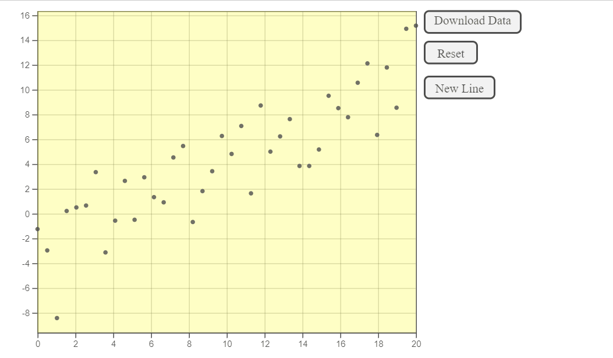

Overview
‘You Draw It’ is a feature that allows users to interact with a chart directly by drawing a line on their computer screen with a mouse. Originally introduced by the New York Times in 2015 for the purpose of interactive reading, this package adapts the use of the ‘You Draw It’ method as a tool for interactive testing of graphics.
Usage
First, load the youdrawitR package
Then, you can generate data to use with the drawr() function using either the linearDataGen() or customDataGen() functions. The linearDataGen() function is used to simulate a linear dataset in this example.
data <- linearDataGen(y_int = -4,
slope = 0.8,
sigma = 2.8,
x_min = 0,
x_max = 20,
N = 40)Lastly, the data can be entered into the drawr() function where the user can draw a line to predict a trend in the data. There are many visual parameters the users can change in the drawr() function, in this example the progress tooltip is shown.
drawr(data, show_tooltip = TRUE)Here is the example of using the interactive graphic. The new line functionality has been used in this example to draw upper and lower bounds of a 95% confidence interval.
